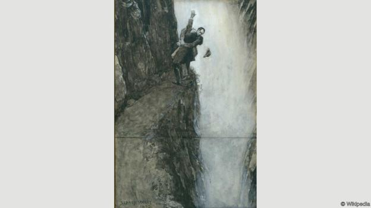

Sherlock Holmes is a famous detective in novels by Conan Doyle. I want to share something interesting about him with you because I am his big fan
n 1893, author Sir Arthur Conan Doyle shoved detective Sherlock Holmes off a cliff. The cliff was fictionally located in Switzerland, over the Reichenbach Falls. But Conan Doyle did the dirty work from his home in London where he wrote. “It is with a heavy heart that I take up my pen to write these the last words in which I shall ever record the singular gifts by which my friend Mr Sherlock Holmes was distinguished,” narrator Dr John Watson says in Conan Doyle’s story The Final Problem, which appeared in The Strand magazine in December 1893. Conan Doyle himself seemed a little less emotional in private. “Killed Holmes,” he wrote in his diary. One can imagine Conan Doyle, slicked-back hair shimmering in the candlelight, twirling his ample mustache with glee. He later said of his famous character: “I have had such an overdose of him that I feel towards him as I do towards paté de foie gras, of which I once ate too much, so that the name of it gives me a sickly feeling to this day.”
Conan Doyle may have thought, at the time of finishing Holmes off in print, that that was that. If he did think this, he did not understand fans – particularly fans of Holmes – very well. The public reaction to the death was unlike anything previously seen for fictional events. More than 20,000 Strand readers cancelled their subscriptions, outraged by Holmes’ premature demise. The magazine barely survived. Its staff referred to Holmes’ death as “the dreadful event”.